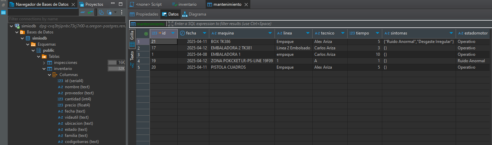
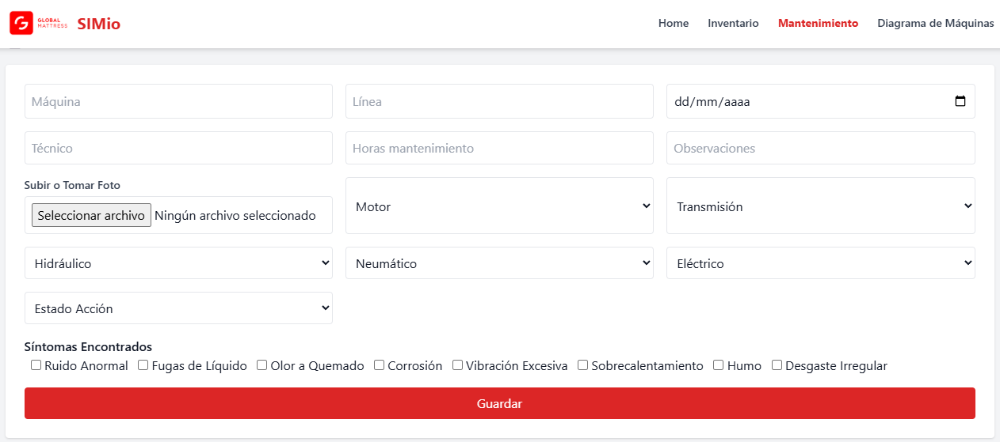

1. Introducción
Esta documentación describe el funcionamiento del sistema SIMio, incluyendo:
- Gestión de inventario de piezas y componentes
- Registro y seguimiento de mantenimientos
- Uso del diagrama interactivo de máquinas
- Acceso a manuales por máquina
2. Inventario
En la sección de Inventario puedes:
- Registrar nuevos artículos
- Filtrar por nombre, proveedor, ubicación, fecha y estado
- Editar o eliminar piezas existentes
Todos los datos son almacenados en una base de datos PostgreSQL y se acceden mediante un backend Node.js.
3. Mantenimiento
Desde la sección de Mantenimiento puedes:
- Registrar nuevas inspecciones y mantenimientos
- Filtrar por técnico, máquina, fecha o estado
- Ver historial detallado por máquina
Los mantenimientos incluyen síntomas seleccionables, evaluación por componente, estado final, imagen opcional y un link al registro.
4. Diagrama Interactivo de Máquinas
Visualiza en un mapa las máquinas con:
- Coordenadas exactas sobre
layout_horizontal.png - Colores por estado: verde, amarillo, naranja y rojo
- Popup con nombre, último estado, fecha, manual y enlace a mantenimientos
5. Manuales
Cada máquina tiene vinculado su manual en PDF alojado en GitHub. Este enlace se puede editar en el archivo maquinas.html dentro del array maquinas.
{
nombre: "CERRADORA 2",
coords: [370, 548],
manual: "https://kalixxe.github.io/Manuales/RIGHT_HAND_OVERLOCK_HEAD.pdf"
}
6. Recomendaciones
- Mantén actualizados los estados de las máquinas
- Verifica que las imágenes de mantenimiento no superen 500 KB
- Haz copias de respaldo periódicas de la base de datos
7. Preguntas Frecuentes (FAQ)
- ¿Dónde se guardan los datos? En una base de datos PostgreSQL alojada en Render.
- ¿Cómo filtro los mantenimientos por máquina? Desde el diagrama de máquinas haz clic en "Ver mantenimientos" y el nombre se filtra automáticamente.
- ¿Puedo usar otro visor en lugar del layout horizontal? Sí, puedes cambiar la imagen y ajustar las coordenadas de cada máquina.
- ¿Cómo subo un nuevo manual? Sube el PDF a GitHub y edita su URL en el archivo
maquinas.html.